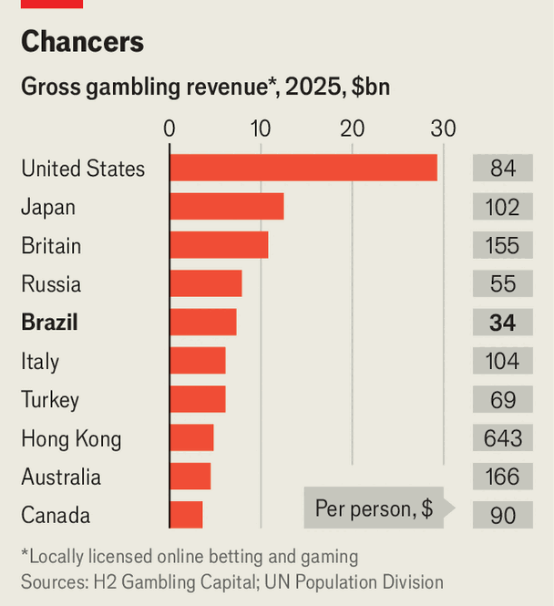

Brazil’s gambling wars are only just beginning
A country that loves to wager is wrestling with the cost
Oct 15th 2026
A HAPPY TIGER is tormenting Brazil. Wearing a red tang jacket, the fat cat dances across phone screens; it is the mascot for a wildly popular digital slot machine. But late last month Brazil’s government banned the “little tiger game”—along with all online casinos and sports-betting. “People are in debt, killing themselves, and getting sick from a disease called ludopathy,” said the president, Luiz Inácio Lula da Silva, justifying his executive order.
Since it was legalised by a right-wing government in 2018, gambling has exploded in Brazil. Last year the country became the world’s fifth-largest betting market. Punters lost over $10bn, more than Brazilians spent on cigarettes and McDonald’s combined. Though it generates lots in taxes—gambling contributes nearly as much to the public finances as agriculture—many Brazilians have turned against the sector. Businesses blame it for record household and public debt, as well as low spending in shops. Church ministers and doctors warn that gambling firms are ensnaring the poor and the young.

Prohibition has a chequered past. Brazil forbade games of chance in 1946, shutting venues from betting houses to bingo halls. This pushed punters towards the jogo do bicho (animal game), an illegal lottery run by racketeers. Wealthy bicheiros soon infiltrated politics and the formal economy; they tried to seem nice by sponsoring samba schools. When gambling was legalised the idea was in part that this would curb their power. Yet the law that was passed to permit it neglected to regulate the sector. It initially imposed no taxes on the industry, or any rules on advertising.
In 2024 Lula (as the president is known) tried to fill in the blanks. His government limited gambling advertising, began stopping gamblers from betting with credit cards and introduced rules such as age verification. His government also began charging operators a 30m reais ($6m) licensing fee and a 12% levy on revenues. Installing such safeguards was difficult, says Daniele Cardoso of the Secretariat for Prizes and Gaming, the industry’s regulator. Yet officials led by the cash-strapped finance ministry believed they could weaken organised crime, protect gamblers and keep a lid on addiction—all while creating new revenue for the state.
Their efforts seem to have failed. Punters who spent their money gambling, rather than ploughing it into more productive things, chopped 1% off Brazilian GDP last year, estimates Guilherme Klein of the Federal University of Rio de Janeiro. That was worse than the impact of Donald Trump’s tariffs on Brazil. The bicheiros have not been edged out: they have simply moved online, where they run both legal and illegal sites, according to Anchieta Nery, an intelligence chief at the justice ministry. More people are wagering high sums and racking up debt, notes Luiz Orsatti of Procon-São Paulo, a consumer-protection agency. In 2025 an academic survey found that some 7% of Brazilians engage in problematic gambling, compared with 2% in Britain, another hotspot.
There is no easy answer. Top football clubs, many of them sponsored by gambling firms, have insisted that permanently outlawing the industry could mean “the end of Brazilian football”. Some of their players have lately taken to the field wearing slogans protesting against the ban. Betting companies are threatening to sue the government for the $500m they have paid in licensing fees; their lobbyists argue the ban will feed an illegal market that already accounted for 30% of the sector.
Lula’s ban aimed to please poor and evangelical voters ahead of the presidential election (the run-off is on October 25th). He, nonetheless, underperformed in the first round. His rival, Flávio Bolsonaro, is said to favour lighter rules—perhaps shutting online casinos but allowing sports bets. It is still anyone’s game. ■